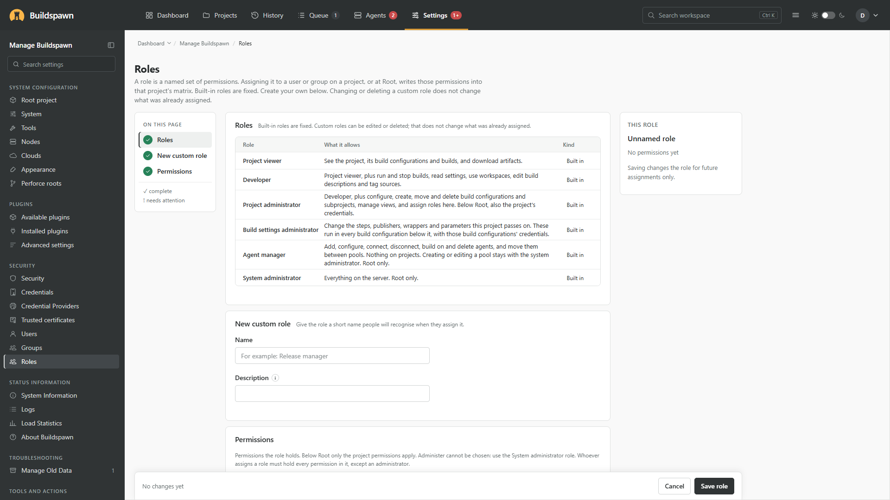
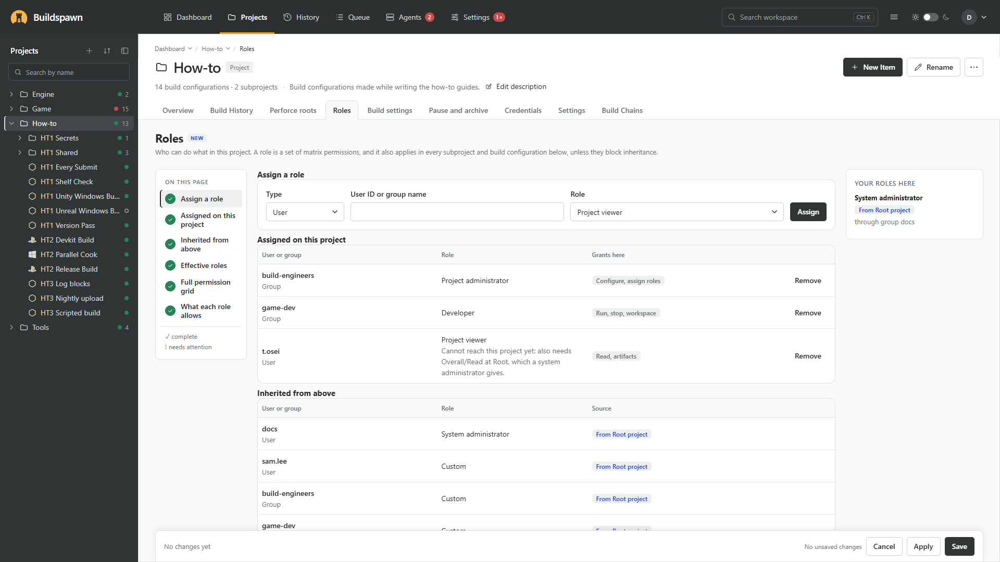

Roles
A role is a named set of permissions, such as Developer, that you give to a user or a group on a project in one step.
When to use it
Use roles when you do not want to tick single permissions on a card. You give a role on a project, and it applies to that project and everything inside it. Give a role at Root and it applies to the whole server. Roles work only with the authorization Project-based security. See Authorization.
A role is a shortcut. When you assign it, Buildspawn ticks the matching permissions in the permission grid. The grid still decides what people can do, and you can change any box there.
The built-in roles
Built-in roles are fixed. You cannot change or delete them.
| Role | What it allows | Where |
|---|---|---|
| Project viewer | See the project, its build configurations and builds, and download artifacts. | Any project |
| Developer | Project viewer, plus run and stop builds, read settings, use workspaces, edit build descriptions and tag sources. | Any project |
| Project administrator | Developer, plus configure, create, move and delete build configurations and subprojects, manage views, and assign roles here. Below Root, also the project’s credentials. | Any project |
| Build settings administrator | Change the steps, publishers, wrappers and parameters this project passes on. These run in every build configuration below it, with those build configurations’ credentials. | Any project |
| Agent manager | Add, configure, connect, disconnect, build on and delete agents, and move them between pools. Nothing on projects. Creating or editing a pool stays with the system administrator. | Root only |
| System administrator | Everything on the server. | Root only |
The Roles page
Settings › Roles shows the table of built-in and custom roles (Role, What it allows, Kind, Actions) and the form New custom role. Only administrators can open it. If Project-based security is off, a yellow note says Roles can’t be assigned because project-based security isn’t in use. You can still prepare custom roles.

Make a custom role
- Open Settings › Roles.
- Under New custom role type a Name, for example
Release manager. - Type a Description. It is shown beside the role wherever it can be given.
- Under Permissions tick what the role holds. Each group (Overall, Credentials, Agent, Build configuration, Run, View, SCM, Perforce) has Tick all and Clear. The box Find a permission filters the list.
- The card This role shows the name and n of m permissions ticked. Check it.
- Click Save role. It now appears on every project’s Roles tab.
| Field | What it does | Limit | Example |
|---|---|---|---|
| Name | The name people see when they assign the role. | 1 to 80 characters, not used by another role | Release manager |
| Description | One line shown next to the role. | Up to 500 characters | Runs and publishes release builds |
| Permissions | The permissions the role holds. | At least one. Administer cannot be chosen: use System administrator. | Build, Cancel, Workspace, Read |
- Below Root, only the project permissions of a role apply.
- Whoever gives a role must hold every permission in it, unless they are a system administrator.
- A role that holds exactly the same as another role is refused: This holds exactly what the role … holds. Use that role.
- To edit or delete a custom role, use the buttons in its row. Saving or deleting a role changes only future assignments. People who already have it keep their permissions.
Give a role on a project
- Open the project (or the Root project for the whole server) and click the Roles tab.
- Click Assign a role.
- Choose Type: User or Group.
- Type the User ID or group name. A group must exist first (see Users and groups).
- Choose the Role.
- Click Assign. The person or group appears in the table Assigned on this project (or Assigned at Root).

What the Roles tab shows
| Part | What it shows |
|---|---|
| Assigned here | Columns User or group, Role, Grants here and Actions (Remove). A row that fits no role shows Custom or A mix that fits no role, and See the grid. |
| Inherited from above | Roles given on a parent project or at Root, with their Source. Change them where they were given. A note says when a project blocks inheritance. |
| Effective roles | Type a User ID and click Show to see every role that person gets here, and through which group. |
| Full permission grid | The cards of this project, for custom permissions and the inheritance choice. Each realm’s grid shows only while that realm is in use. |
| What each role allows | A short list of the roles and their descriptions. |
Rules and safeguards
- System administrator and Agent manager can only be given at Root.
- The last system administrator cannot be removed: Refused: nobody else who can sign in would be a system administrator.
- You cannot give System administrator to a group like
authenticated, because everyone would become an administrator. - To include people who are not signed in, use the group
anonymous. It is not a user. - A row marked Gives nobody anything points to a user or group that was deleted. Remove it, or create the user or group again.
- People must also be able to reach the project: they need Overall › Read at Root, and Read on the projects above. Otherwise a message says Cannot reach this project yet.
The “Roles” note on the Security page
On Settings › Security, under the permission cards, a section Roles explains how roles relate to the cards. When project-based security is on, it says the Roles tab ticks preset boxes in the table above, that you can still change any box, and that people need Overall › Read to reach a project. A link, Open the roles of Root, goes to the Root roles. When another strategy is on, it says to choose Project-based security and tick at least Administer for yourself first.
From the terminal
The server’s command line has three commands for scripts. See Terminal commands for how to call it.
| Command | What it does |
|---|---|
list-roles [PROJECT] | Lists the roles, or who holds which role on a project. |
assign-role ROLE PROJECT -user|-group NAME | Gives a user or group a role on a project or at Root. |
remove-role ROLE PROJECT -user|-group NAME | Takes a role away. |
PROJECT is the full name of the project, or / for Root.
A worked example
You want one person from the build team to release builds of the project HT2, without letting them change settings. On Settings › Roles you make the role Release manager with Read, Build, Cancel, Workspace and Update (under Run). On the Roles tab of HT2 you give it to the group release-team. Afterwards, Effective roles for sam.lee shows Release manager, through group release-team.
What you see when it runs
- People with the role see the project and the buttons their role allows. They do not see the others.
- The group page (Settings › Groups) lists the roles of each group.
Problems and fixes
| Problem | What to do |
|---|---|
| No Roles tab. | Choose Project-based security on Settings › Security. |
| There is no group … | Create the group first on Settings › Groups. |
| … does not hold exactly … on this row. Change it in the full permission grid. | The row was changed in the grid. Edit it in the grid. |
| Role cannot be assigned: you do not hold every permission in it. | Ask a system administrator, or a person who has all of them. |
| The person is a Developer but sees nothing. | They also need Overall › Read. Give it to Authenticated Users. |